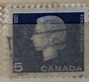
| SOURCE | TITLE| IMAGE MATCH | click to source page |
| eBay | Canada sc#405as/bs Queen Elizabeth II - Cameo Issue: Wheat (agriculture), Used | eBay | 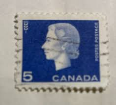 |
| HipStamp | Canada 405 Queen Elizabeth II Cameo 1963 | Canada, General Issue Stamp / HipStamp | 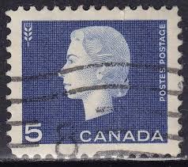 |
| eBay | Canada - 1973 - Canadian Prime Ministers - Queen Elizabeth II - 8 C - Used - #2 | eBay | 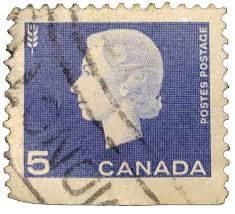 |
| Poshmark | Other | 1963 Queen Elizabeth Ii Canadian Stamp | Poshmark | 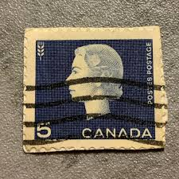 |
| eBay | Canada Stamp O49 QEII Cameo Portrait - G Overprint MNH | eBay | 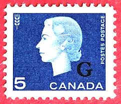 |
| mbeatpercussion.com | 1967 Queen Elizabeth II 5 cent Stamp | 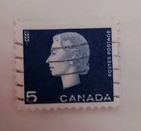 |
| HipStamp | Stamps Are Friends / HipStamp |  |
| Arpin Philately | Buy Canada #405xx - Queen Elizabeth II (1962) 5¢ - Precancelled (no.405) | Arpin Philately | 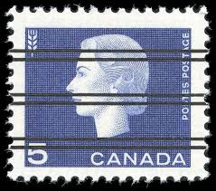 |
| HipStamp | Browse Products / HipStamp | 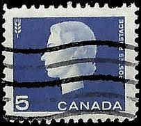 |
| Todocolección | canadá - v/f 35 - merry christmas joyeux noël. - Buy Antique stamps of Canada on todocoleccion | 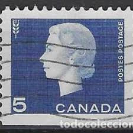 |
| commonwealthstamps.com | Canada 1962 Queen Elizabeth II and industry symbols SG 531 Fine Used | 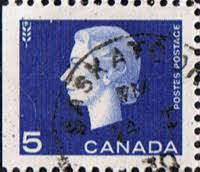 |
| Colnect | แสตมป์: Queen Elizabeth II, wheat sheaf (แคนาดา(Queen Elizabeth II - 1962-63 - Cameo Issue) Mi:CA 352Exl,Sn:CA 405asL 📮 | 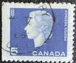 |
| HipStamp | Canada #405 5c Queen Elizabeth II and Wheat | Canada, General Issue Stamp / HipStamp | 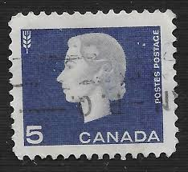 |
| Dreamstime.com | 127 Canada Stamp Set Stock Photos - Free & Royalty-Free Stock Photos from Dreamstime | 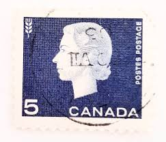 |
| MyViMu.com | Kanada w MyViMu.com | 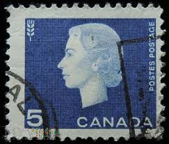 |
| goheme.com | Stamps Archives - GoHeme.com | 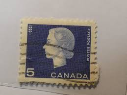 |
| HipStamp | Canada #405 used | Canada, General Issue Stamp / HipStamp | 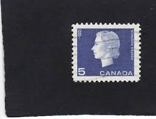 |
| Alamy | Canadian stamp of the queen hi-res stock photography and images - Alamy | 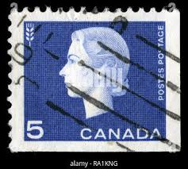 |
| Shutterstock | 20 Born April 1962 Royalty-Free Images, Stock Photos & Pictures | Shutterstock | 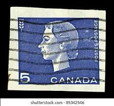 |
| Etsy | 50 Queen Elizabeth Stamps - Blue - Stamps by Color - Stamp Art Projects - Canada - 1962 - Etsy | 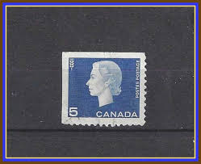 |
| Osta | Kanada " ELIZABETH II " 1962 (247182164) - Osta.ee | 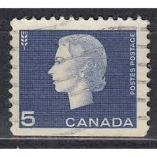 |
| DBA.dk | Canada, stemplet, Dagligserie | DBA | 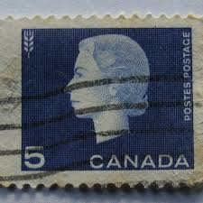 |
| Alamy | Great Britain Postage Stamp - Queen Elizabeth II - Dorothy Wilding Portrait Stock Photo - Alamy | 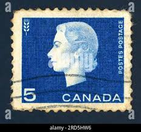 |
| Shutterstock | 4+ Thousand Old Singapore Stamps Royalty-Free Images, Stock Photos & Pictures | Shutterstock | 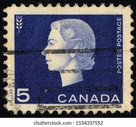 |
| ebid.net | Poole Pottery Handpainted Hors D'Oeurves Seafood Dish on eBid United Kingdom | 201696886 | 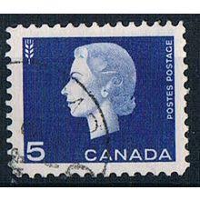 |
| Alamy | 1962 queen elizabeth hi-res stock photography and images - Alamy | 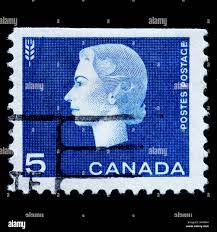 |
| TrueGether | Shop Canada from Entertainment Memorabilia Online at Best Prices | TrueGether | 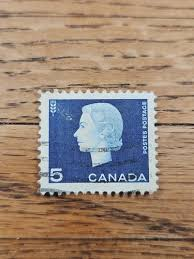 |
| Harmer-Schau Auctions | Harmer-Schau Auctions | 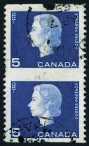 |
| Ruby Lane | 4 Definitives Series 1977-83 Queen Elizabeth II Stamps. For Sale at Ruby Lane | 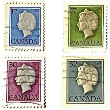 |
| Osta | Kanada " ELIZABETH II " 1962/64 (247181703) - Osta.ee | 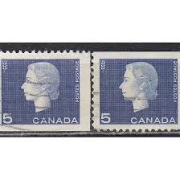 |
| Dreamstime.com | Canadá 1963 Sello Postal De La Reina Elizabeth Ii Imagen editorial - Imagen: 250781305 | 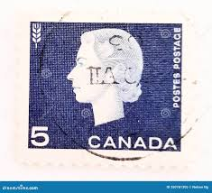 |
| eBay | Canada Postage ~ Queen Elizabeth II ~ Blue 5¢ Stamp ~ Cancelled/Posted ~ c.1963 | eBay | 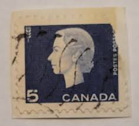 |
| Find Your Stamps Value | Coil Stamps: Queen Elizabeth II and Wheat 5c Violet blue stamp price, value | 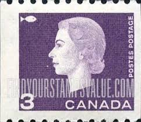 |
| Alamy | Russia 1962 hi-res stock photography and images - Page 2 - Alamy | 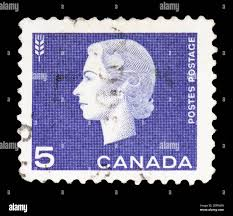 |
| Lee Stamp Sales | Search - Tag - Queen Elizabeth II Cameo Issue | 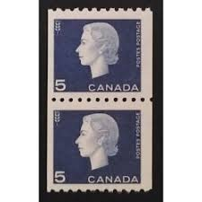 |
| Find Your Stamps Value | Value of canadian 2 cent queen elizabeth stamps | 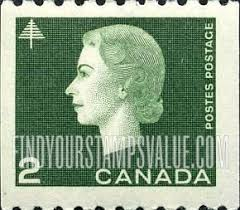 |
| Kijiji | 1962-Queen Elizabeth 5 cent Canadian Stamp | Hobbies & Crafts | Kitchener / Waterloo | Free local classifieds - Kijiji | 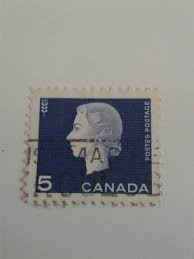 |
| HipStamp | Canada, 5c Queen Elizabeth II (SC# 409) MNH PAIR | Canada, General Issue Stamp / HipStamp | 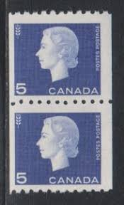 |
| esam.ir | تک 1/5 دلاری ملکه الیزابت دوم طبق کاتالوگ | 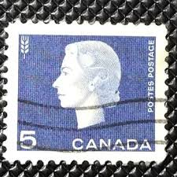 |
| eBay | 1963 Queen Elizabeth II Canadian Rare Stamp used | eBay | 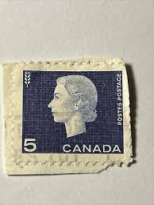 |
| HipStamp | Canada #926 34c Queen Elizabeth II | Canada, General Issue Stamp / HipStamp | 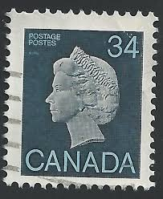 |
| Lee Stamp Sales | Lee Stamp Sales | Pairs | 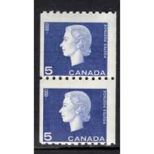 |
| bazar.sk | KANADA V => predaj a inzercia na bazár (195) > Bazoš | Bazar.sk | 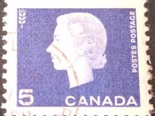 |
| eBay | 3 Cent Stamp Canada for sale | eBay | 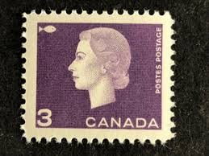 |
| Arpin Philately | Buy Canada #405pi - Queen Elizabeth II (1962) 5¢ - #405p with wide & narrow tag bars in margin pair | Arpin Philately | 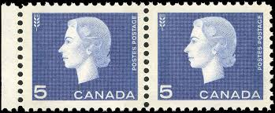 |
| Todocolección | canada 1994 scott 1359as sello º bandera canadi - Buy Antique stamps of Canada on todocoleccion | 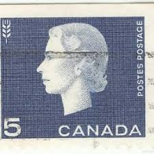 |
| eBay | Canada - #405 Queen Elizabeth II Cameo Issue - MNH | eBay | 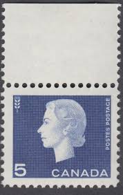 |
| eBay | 1964 Barry Goldwater Presidential Campaign Stamp - Portrait - Blue Back Ground | eBay | 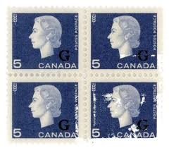 |
| eBay | CANADA SCOTT # 409 STRIP OF 3 PLUS SINGLE, MINT, OG, NH, GREAT PRICE! (SP} | eBay | 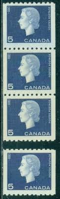 |
| HipStamp | Canada 789 Queen Elizabeth II 17¢ 1979 | Canada, General Issue Stamp / HipStamp | 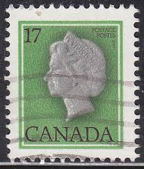 |
| 220 Rarest stamps ideas to save today | rare stamps, stamp collecting, postage stamps and more | ||
| eBay | 409 Cameo 5 cent coil strip of 4 Cat$26 Canada mint | eBay | |
| Vista Stamps | Canada Stamps - O - Official for sale | Vista Stamps | |
| Shutterstock | 3+ Hundred Canada 5 Cents Royalty-Free Images, Stock Photos & Pictures | Shutterstock | |
| eBay | 2x CANADA 1962 CANADIAN CENTENNIAL QUEEN ELIZABETH FV FACE 10 CENT MNH STAMP LOT | eBay | |
| Postage Stamp Guide | Queen Elizabeth II - Brown - Canada Postage Stamp | |
| eBay | 406 2c QUEEN ELIZABETH II MNH OG (SEE ITEM DESCRIPTION) | eBay | |
| HipStamp | Wonderful 1962 MNH Blocks of #401 #402 #403 #404 #405 Cameo Queen Elizabeth II | Canada, General Issue Stamp / HipStamp | |
| Arpin Philately | Buy Canada #405 - Queen Elizabeth II (1962) 5¢ | Arpin Philately | |
| eBay | Las mejores ofertas en Royalty como nuevo varios colores estampillas de Canadá | eBay |